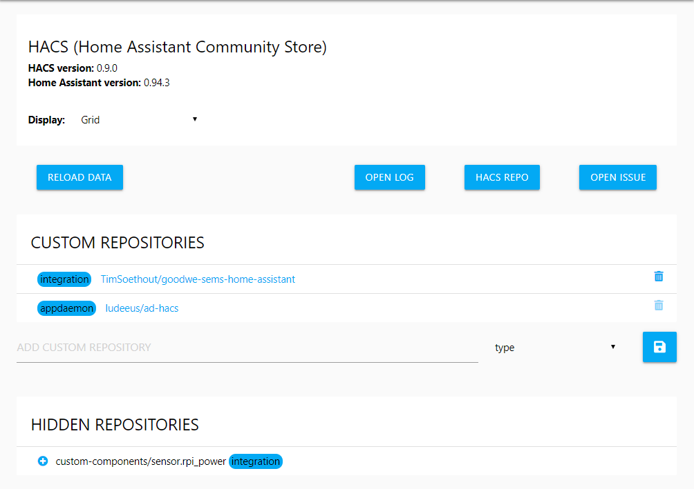

Settings¶
During startup HACS loads all known repositories, when it does you will see a progressbar at the top of the page, if will not go away on it's own, try refreshing the bowers window after a couple of minutes.

HACS Information¶
At the top of the settings page you will see the current version of both HACS and Home Assistant.
The "UPGRADE ALL" button will only show if there are pending upgrades.
HACS Option: Display¶
This setting changes how both "OVERVIEW" and "STORE" looks, you can choose between Grid and Table.
Grid¶
Table¶
Add custom repositories¶
By default all elements that meet the requirements from these orgs are automatically added:
Developers can also add their repositories to be included by default
But you can add any other repository that meets the requirements, to do so go to the "SETTINGS" tab.
NB!: Don't try to add a users configuration repository, you may be able to add it but it will not give you the result you expect.
Add the url to the repository under "CUSTOM REPOSITORIES" and select a type before clicking the "save icon".
| Type | Description |
|---|---|
Appdaemon |
Apps for AppDaemon |
Integration |
Integrations for Home Assistant (custom_components) |
Plugin |
Pugins for Lovelace (cards, mods, elements, rows and so on.) |
Python_Script |
Python scripts for the python_script integration |
Theme |
Themes for the frontend integration |
After adding a repository the repository will be scanned, if it can be tracked the element will show up under "STORE", and you will be redirected to that element.
Want to get inspiration on what to add? Check out the Awesome Home Assistant list it contains links to many custom_components (integrations) and custom_cards (plugins).
If you have added a repository manually and that repository is subsequently added to the 'store' then that will be removed from the custom repository list.
Hidden repositories¶
This is a list of all your hidden repositories.
Click the "+" icon to the left to unhide them.